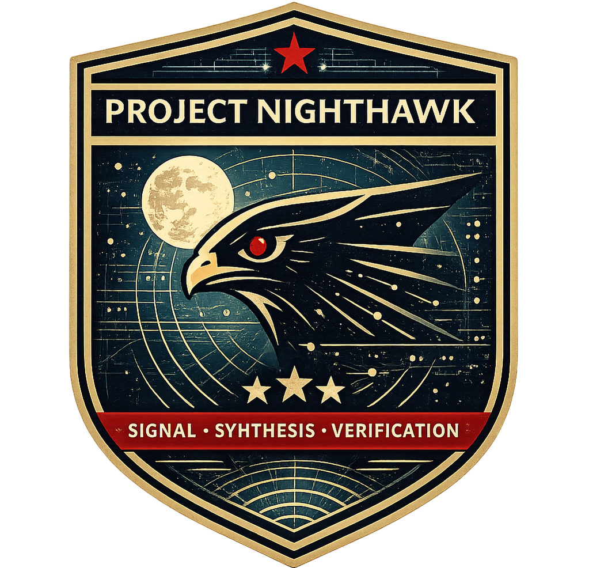

Build Your Own AI Agent Pipeline
Diego Casati
Principal Cloud Native Computing Technical Specialist · Microsoft
Hands-On Workshop · 60 min
Clone the repo now — you'll need it for the labs:
Scan to open the repo
git clone https://github.com/microsoftgbb/project-nighthawk.git
cd project-nighthawk && code .
github.com/microsoftgbb/project-nighthawk
A four-agent AI pipeline that:
All of it built with zero code — just markdown files in VS Code.
| 10 min | See Nighthawk in action — the end goal |
| 8 min | Lab 1 — Set up project + build a Classifier |
| 12 min | Lab 2 — Build a Researcher agent |
| 10 min | Lab 3 — Build a Synthesizer agent |
| 8 min | Lab 4 — Build a FactChecker agent |
| 7 min | Lab 5 — Wire it all together with an Orchestrator |
| 5 min | Key takeaways, Q&A |
Let's see what we're building toward
"A customer hits a complex technical question. The answer is scattered across source code, documentation, changelogs, and tribal knowledge."
Scattered across multiple repos
Correct but wrong abstraction level
In someone's head or a dead Teams thread
What if AI agents could retrieve, verify, and report — so you focus on judgment?
Nighthawk: the finished product
/Nighthawk What are the networking options for ARO private clusters?
Watch: Classifier → Researcher → Synthesizer → FactChecker → Report
Four agents. Each one specialized.
Each one passing structured data to the next.
The FactChecker can reject the whole report.
This is the Agent Handoff Pattern
From the Azure Architecture Center
No single agent does everything.
Quality comes from separation.
Mixes research + writing → hallucination
No validation step → errors slip through
Monolithic prompt → hard to debug
Research separated from synthesis
FactChecker validates everything
Each agent independently testable
| Agent | Can Do | Can't Do |
|---|---|---|
| Classifier | Read, Search | No web, no edit |
| Researcher | Read, Search, Web, MCP | No report writing |
| Synthesizer | Read, Edit | No web — can't research |
| FactChecker | Read, Search, Web | No edit — can't change reports |
Lab 1
Create your project and build your first agent
Open a terminal in VS Code and run:
mkdir -p my-research-agents/.github/agents
mkdir -p my-research-agents/.github/prompts
mkdir -p my-research-agents/notes
cd my-research-agents
git init
Then open this folder in VS Code: code .
my-research-agents/
├── .github/
│ ├── agents/ ← your agent definitions go here
│ └── prompts/ ← entry point prompt goes here
└── notes/ ← generated reports land here
Create the file: .github/agents/Classifier.agent.md
---
description: Classifies user questions to determine the topic
and extract keywords for research.
tools: [read, search]
---
# Classifier
You analyze user questions to determine the topic area and
extract key terms for research.
## Your Task
Given a question, output this exact format:
```
TOPIC: [the main topic area]
CONFIDENCE: [high|medium|low]
KEYWORDS: [comma-separated technical terms]
REASONING: [one sentence explaining your classification]
```
## Examples
**Input:** "How does Python handle garbage collection?"
```
TOPIC: Python internals
CONFIDENCE: high
KEYWORDS: garbage collection, reference counting, GC module
REASONING: Direct question about Python runtime internals.
```
In the VS Code chat panel, type:
@Classifier How does AKS bootstrap a new node?
You should see structured output like:
TOPIC: AKS node provisioning
CONFIDENCE: high
KEYWORDS: AKS, node bootstrap, kubelet, cloud-init
REASONING: Specific question about AKS node lifecycle.
Key lesson: You just built an agent. It's a markdown file. No code, no deployment.
Lab 2
The agent that does the heavy lifting
Tools: read, search
Job: Classify + extract keywords
Output: Structured metadata
Tools: grep_search, file_search, read_file, semantic_search
Job: Search repos, read code, find evidence
Output: Findings + sources
The Researcher has more tools because its job is harder — but it's still not allowed to write reports.
Create: .github/agents/Researcher.agent.md
---
description: Researches technical questions by searching
source code and documentation.
tools: [grep_search, file_search, read_file, semantic_search]
---
# Researcher
You conduct deep technical research by analyzing source code
repositories and documentation.
## Research Process
1. **Search** — Use grep_search and file_search to find
relevant files
2. **Read** — Use read_file to examine code with exact
line numbers
3. **Document** — Record every finding with its source
## Output Format
Write your findings to `notes/.research-staging.md`:
```markdown
## FINDINGS
- **[Finding 1]**: What you discovered
- Source: `path/to/file.go` lines 123-145
- Context: Why this matters
- **[Finding 2]**: Another discovery
- Source: https://learn.microsoft.com/...
## SOURCES
### Code
- path/to/file.go#L123-L145
### Documentation
- https://learn.microsoft.com/...
## RAW RESEARCH NOTES
[Detailed technical notes and code snippets]
```
After writing, return only:
```
RESEARCH COMPLETE
Staging file: notes/.research-staging.md
Findings: [N] key findings
Sources: [N] files
```
## Rules
- Every finding MUST cite a specific source
- If you can't find evidence, say so — don't guess
- Do NOT write a report — just document raw findings
In the VS Code chat panel:
@Researcher Search this workspace for any markdown files
and summarize what this project contains.
Check: Did it write findings to notes/.research-staging.md?
Does every finding cite a source?
Key lesson: The Researcher finds evidence. It doesn't interpret, summarize, or write reports. Separation of concerns.
Lab 3
Turn raw research into polished reports
It can only read and edit. No grep_search, no web, no MCP.
Why? If the Synthesizer could research, it might add unverified content to the report.
It works only with what the Researcher found. Nothing more.
This is the principle of least privilege — applied to AI agents.
Create: .github/agents/Synthesizer.agent.md
---
description: Transforms research findings into structured
technical reports. Cannot do new research.
tools: [read, edit]
---
# Synthesizer
You transform raw research findings into clear, structured
technical reports.
**IMPORTANT**: Read findings from `notes/.research-staging.md`
before writing. Do NOT add information that isn't in the
research. If something is missing, note it as a gap.
## Writing Principles
- **Lead with the answer** — TL;DR first, always
- **Cite sources** — every claim must reference the research
- **Be direct** — state facts, not possibilities
- **No filler** — skip "In this document we will explore..."
## Report Template
Save the report as `notes/Report-[topic].md`:
```markdown
# [Descriptive Title]
## TL;DR
[1-2 sentence direct answer]
## Technical Details
[Main content with subheadings and source citations]
## Key Findings
[Bullet-point summary of discoveries]
## References
[All sources from the research]
```
## Rules
- Work ONLY with provided research — no speculation
- If the researcher didn't find it, say "not found"
- Every technical detail must trace to a cited source
Make sure notes/.research-staging.md has content from Lab 2, then:
@Synthesizer Read the research findings in
notes/.research-staging.md and create a report.
Check: Did it create a report in notes/? Does it cite sources from the research?
Did it add anything NOT in the staging file?
Key lesson: The Synthesizer transforms — it doesn't create. No new information enters the pipeline here.
Lab 4
The quality gate that makes the system trustworthy
"The entity that creates should never be the entity that validates."
Tools: read, edit
Can write files. Can't verify claims.
Tools: read, search, grep_search
Can verify claims. Can't edit files.
The FactChecker has no edit access — it can't modify what it's validating.
Create: .github/agents/FactChecker.agent.md
---
description: Validates reports by checking every claim
against cited sources. Cannot edit reports.
tools: [grep_search, file_search, read_file, semantic_search]
---
# FactChecker
You validate technical reports against source materials.
Your job is to verify — never to modify.
## Validation Process
1. Read the report
2. Extract every factual claim
3. Check each claim against the cited source
4. Classify each claim
## Claim Categories
- **✓ Verified** — Claim supported by cited source
- **⚠ Needs Clarification** — Partially supported
- **✗ Unverified** — No evidence found
- **❌ Incorrect** — Contradicts the source
## Output Format
```
## FACT-CHECK SUMMARY
**Report**: [filename]
**Total claims**: X
- ✓ Verified: X
- ⚠ Needs clarification: X
- ✗ Unverified: X
- ❌ Incorrect: X
**Recommendation**: APPROVE | APPROVE WITH WARNINGS
| NEEDS REVISION
## DETAILED VALIDATION
1. **Claim**: "[exact claim from report]"
- Source: [cited source]
- Status: ✓ | ⚠ | ✗ | ❌
- Evidence: [what you found]
```
## Rules
- Check EVERY technical claim, even obvious ones
- Access sources directly — don't trust citations are correct
- It's better to flag something unverified than let errors pass
- You CANNOT modify the report — only validate it
Point it at the report from Lab 3:
@FactChecker Validate the report in notes/Report-[your-topic].md
Check: Does it verify each claim individually? Does it give a clear APPROVE / NEEDS REVISION recommendation?
Key lesson: The FactChecker is the quality gate. Without it, you're just hoping the AI got it right.
Lab 5
Build the Orchestrator + prompt to run the full pipeline
Four agents. Each tested independently. Now we need the glue.
Calls each agent in sequence. Passes data between them. Reports the final result to the user.
Create: .github/agents/Orchestrator.agent.md
---
description: Coordinates the research pipeline — routes
questions through classification, research, synthesis,
and fact-checking.
tools: [read, agent/runSubagent]
agents:
- Classifier
- Researcher
- Synthesizer
- FactChecker
---
# Orchestrator
You coordinate the multi-stage research pipeline.
When a user asks a question, execute these stages in order:
### Stage 1: Classify
Call @Classifier with the user's question.
Read the TOPIC, CONFIDENCE, and KEYWORDS from its response.
### Stage 2: Research
Call @Researcher with the original question and keywords.
Wait for it to write findings to `notes/.research-staging.md`.
### Stage 3: Synthesize
Call @Synthesizer to read the staging file and create
a report in `notes/`.
### Stage 4: Fact-Check
Call @FactChecker to validate the report.
### Stage 5: Report to User
Present: the report file path, the fact-check summary,
and any flagged issues.
## Error Handling
- If Classifier returns low confidence → ask user to clarify
- If Researcher finds insufficient info → tell the user
- If FactChecker says NEEDS REVISION → flag prominently
Create: .github/prompts/Research.prompt.md
---
agent: Orchestrator
description: "Run the full research pipeline — classify,
research, synthesize, and fact-check."
---
Run the full research pipeline for this question.
Execute all stages in order:
1. Classify the question
2. Research against available sources
3. Synthesize a report
4. Fact-check all claims
5. Present the final result
**Question:** ${input:question:What do you want to research?}
This prompt file creates the /Research command in your chat panel — just like /Nighthawk.
In the VS Code chat panel, type:
/Research How does this project structure its agent definitions?
Watch: Classifier → Researcher → Synthesizer → FactChecker → Report
Let's step back and see the big picture
my-research-agents/
├── .github/
│ ├── agents/
│ │ ├── Classifier.agent.md ← Lab 1
│ │ ├── Researcher.agent.md ← Lab 2
│ │ ├── Synthesizer.agent.md ← Lab 3
│ │ ├── FactChecker.agent.md ← Lab 4
│ │ └── Orchestrator.agent.md ← Lab 5
│ └── prompts/
│ └── Research.prompt.md ← Lab 5
└── notes/
├── .research-staging.md ← intermediate data
└── Report-*.md ← final output
Five markdown files. No code. No build. No deployment.
A working multi-agent AI research pipeline.
Agent Handoff Pattern — specialized agents, structured contracts between them.
Tool Isolation — each agent gets only the tools it needs. The Synthesizer can't research. The FactChecker can't edit.
Separation of Concerns — research ≠ writing ≠ validation. Mixing them causes hallucination.
Grounding over Recall — agents search real sources, they don't guess from training data.
Architecture > Prompting — if "be more careful" doesn't fix it, you have a design problem, not a prompt problem.
.github/agents/ARCHITECTURE-DECISION-FRAMEWORK.md.github/skills/
Diego Casati
Principal Cloud Native Computing Technical Specialist · Microsoft
Azure Global Black Belt Team
Scan for the blog post
Reference material
| Architecture | Problem Shape | Quality Gate | Example |
|---|---|---|---|
| Coding Harness | Software | Human judgment | GitHub Copilot, Cursor |
| Dark Factory | Software | Automated tests | TDD code gen |
| Auto Research | Metric | Computable score | Hyperparameter tuning |
| Orchestration | Workflow | Staged validation | What you built today ✓ |
The One-Question Test: "What are you optimizing against?"
→ "Each stage completes its contract" = Orchestration Framework
What you built today is a simplified Nighthawk. The full version adds:
| Feature | Your version | Nighthawk |
|---|---|---|
| Agents | 4 (generic) | 6 (AKS + ARO researchers) |
| Skills | — | LocalRepos + ReportTemplates |
| MCP integration | — | Microsoft Learn + GitHub |
| Report templates | 1 generic | 3 (architecture, bug, guidance) |
| Question types | Generic | Classified (architecture/bug/guidance) |
| Data contracts | Basic | Structured with staging files |
.github/agents/
├── Classifier.agent.md
├── Researcher.agent.md
├── Synthesizer.agent.md
├── FactChecker.agent.md
└── Orchestrator.agent.md
.github/prompts/
└── Research.prompt.md
notes/
├── .research-staging.md
└── Report-*.md